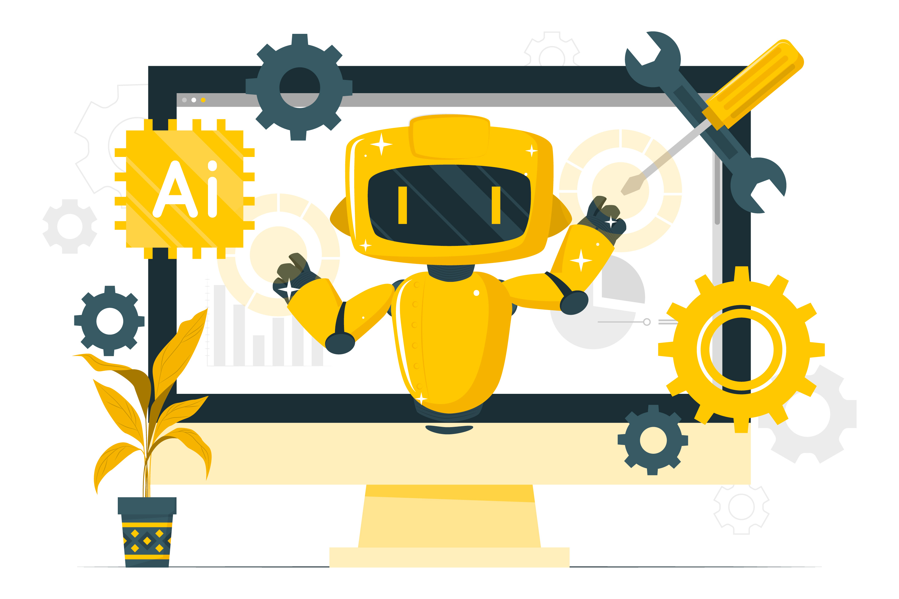

Beyond the Manual: How AI is Redefining the Tester's Role in the Digital Age

Key Takeaways
- AI is transforming the tester's role from manual execution to strategic quality assurance
- Testers need to develop new skills in AI, automation, and data analysis
- AI enhances testing efficiency while creating new opportunities for testers
- The future of testing requires a balance of AI capabilities and human expertise
In the rapidly evolving world of software development, Artificial Intelligence (AI) is no longer a futuristic concept—it's a present-day reality reshaping industries and redefining roles. The field of Quality Assurance (QA) is no exception. As AI continues to advance, it is transforming the way testers work, shifting their focus from repetitive manual tasks to more strategic, creative, and analytical responsibilities.
In this blog post, we'll explore how AI is redefining the tester's role in the digital age, the new skills testers need to thrive, and what the future holds for QA professionals. Whether you're a seasoned tester or just starting your journey, this article will provide valuable insights into how AI is revolutionizing testing and what it means for your career.
The Traditional Tester's Role: A Foundation for Change
Historically, the role of a software tester has been centered around manual testing—meticulously executing test cases, identifying bugs, and ensuring that applications meet functional requirements. While manual testing remains essential for certain scenarios, such as exploratory and usability testing, its limitations are becoming increasingly apparent in today's fast-paced digital landscape.
Challenges with traditional testing include:
- Time-Consuming: Manual testing is slow and labor-intensive, making it difficult to keep up with rapid development cycles.
- Error-Prone: Human testers are susceptible to mistakes, especially when performing repetitive tasks.
- Limited Coverage: It's impossible to test every possible scenario manually, leaving gaps in coverage.
- Scalability Issues: As applications grow in complexity, scaling manual testing efforts becomes impractical.
These challenges have paved the way for AI to step in and address the inefficiencies of traditional testing methods.
How AI is Transforming Testing
AI is not replacing testers—it's empowering them. By automating mundane tasks, analyzing vast datasets, and providing actionable insights, AI is enabling testers to focus on higher-value activities. Here's how AI is transforming the tester's role:
1. Intelligent Test Automation
AI-powered tools can automatically generate, execute, and maintain test scripts. For example:
- Self-Healing Tests: AI detects changes in the application (e.g., UI updates) and adjusts test scripts dynamically, reducing maintenance overhead.
- Test Case Prioritization: AI identifies which tests are most critical based on risk and impact, ensuring faster feedback loops.
- Automated Regression Testing: AI streamlines regression testing by intelligently selecting only those test cases affected by recent code changes.
Tools like Testim, Functionize, and Applitools leverage AI to enhance test automation, making it smarter and more efficient.
2. Predictive Analytics and Defect Prediction
AI analyzes historical data to predict where defects are likely to occur. This proactive approach helps testers focus their efforts on high-risk areas, reducing the likelihood of critical failures in production. For example:
- Machine learning models can identify patterns in past defect reports and flag modules prone to issues.
- Predictive analytics can forecast performance bottlenecks under specific conditions.
3. Visual and UX Testing
AI enables visual testing by comparing screenshots of the application to detect UI inconsistencies, layout issues, or design flaws. Tools like Applitools Eyes use computer vision to ensure pixel-perfect UIs across devices and browsers. This capability goes beyond traditional functional testing, ensuring a seamless user experience.
4. Enhanced Test Data Management
AI simplifies the creation and management of test data by generating realistic and diverse datasets. For example:
- AI can simulate user behaviors and inputs based on real-world usage patterns.
- Synthetic data generation ensures comprehensive testing without relying on production data, addressing privacy concerns.
5. Continuous Testing in CI/CD Pipelines
AI integrates seamlessly into Continuous Integration/Continuous Delivery (CI/CD) pipelines, enabling continuous testing at scale. AI-driven tools monitor application performance in real-time, identify anomalies, and trigger automated tests whenever changes are deployed.
The New Role of Testers in the AI-Driven Era
As AI takes over repetitive and time-consuming tasks, the role of testers is evolving. Testers are transitioning from being task executors to becoming strategic contributors who drive quality assurance initiatives. Here's how the tester's role is changing:
1. From Manual Execution to Test Strategy Design
Instead of spending hours executing test cases, testers now focus on designing robust test strategies. They collaborate with developers, product owners, and stakeholders to define testing scope, prioritize test cases, and ensure alignment with business goals.
2. Emphasis on Exploratory and Usability Testing
While AI excels at repetitive tasks, it cannot replicate human creativity and intuition. Testers play a crucial role in exploratory testing, uncovering edge cases and unexpected issues that automated tests might miss. They also evaluate usability, accessibility, and user experience—areas where human judgment is irreplaceable.
3. Leveraging AI Insights for Decision-Making
Testers now use AI-generated insights to make data-driven decisions. For example:
- Analyzing defect trends to identify root causes.
- Using predictive analytics to allocate resources effectively.
- Monitoring application performance to optimize testing efforts.
4. Upskilling in AI and Automation
To thrive in the AI-driven era, testers must develop new skills, including:
- Programming: Writing scripts for AI-powered automation tools.
- Data Analysis: Interpreting AI-generated reports and metrics.
- Machine Learning Basics: Understanding how AI algorithms work and how they apply to testing.
- Tool Proficiency: Mastering AI-driven testing tools and frameworks.
5. Advocating for Quality Across Teams
Testers are becoming champions of quality within their organizations. They educate developers, product managers, and other stakeholders about the importance of testing and advocate for practices like shift-left testing, where quality is built into the development process from the start.
Benefits of AI in Testing
The integration of AI into testing offers numerous advantages for both testers and organizations:
- Faster Time-to-Market: AI accelerates testing cycles, enabling faster releases without compromising quality.
- Higher Test Coverage: AI ensures comprehensive testing by covering a wider range of scenarios, including edge cases.
- Improved Accuracy: AI eliminates human errors and provides precise results, enhancing the reliability of test outcomes.
- Proactive Issue Detection: Predictive analytics helps identify potential risks early in the development lifecycle, reducing rework and costs.
- Enhanced Collaboration: AI fosters collaboration between testers, developers, and other teams by providing shared insights and metrics.
Challenges and Ethical Considerations
While AI brings immense benefits, it also introduces challenges and ethical considerations that testers must address:
- Skill Gaps: Many testers lack the technical expertise required to work with AI-driven tools.
- Over-Reliance on AI: Relying too heavily on AI may lead to complacency, overlooking issues that require human judgment.
- Bias in AI Models: If AI models are trained on biased data, they may produce skewed results, impacting the accuracy of testing.
- Job Security Concerns: Some testers fear that AI will replace their roles entirely, though in reality, it enhances rather than replaces them.
Addressing these challenges requires a balanced approach, combining AI capabilities with human expertise.
Preparing for the Future: Skills Testers Need to Thrive
To stay relevant in the AI-driven era, testers must embrace lifelong learning and acquire new skills. Here's a roadmap for success:
Technical Skills:
- Learn programming languages like Python, Java, or JavaScript for automation.
- Gain proficiency in AI-powered testing tools and frameworks.
- Understand APIs, databases, and cloud technologies.
Analytical Skills:
- Develop data analysis skills to interpret AI-generated insights.
- Learn statistical methods and machine learning basics.
Soft Skills:
- Enhance communication skills to collaborate effectively with cross-functional teams.
- Cultivate problem-solving abilities to tackle complex challenges.
Adaptability:
- Stay updated on emerging trends and technologies in AI and testing.
- Be open to experimenting with new tools and methodologies.
Conclusion
AI is not replacing testers—it's elevating their role. By automating repetitive tasks, providing actionable insights, and enabling continuous testing, AI empowers testers to focus on strategic activities that drive quality and innovation. In the digital age, testers are no longer just bug hunters; they are quality advocates, problem solvers, and key contributors to the success of software projects.
As AI continues to evolve, testers who embrace change, upskill, and adapt will thrive in this dynamic landscape. The future of testing is bright, and the opportunities are endless for those willing to embrace the possibilities of AI.
Are you ready to step into the future of testing? Share your thoughts or experiences in the comments below. Let's learn and grow together!
Subscribe to QA Blogs
If you found this article helpful, don't forget to subscribe to QA Blogs for more insightful content on software testing, automation, and QA best practices. Together, let's build better software—one test at a time!
Nikunj Mistri
Founder, QA Blogs
About the Author